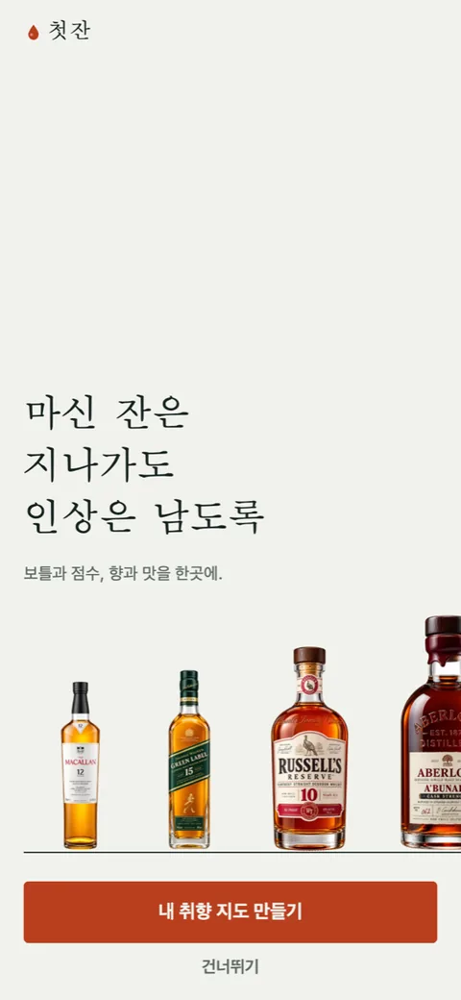

첫잔 [5] — "아직 AI스럽다"는 말을 듣고
AI와 함께 만든 앱을 보여줬더니 돌아온 말이 "아직 AI스럽다"였습니다. 기분 나쁜 말이 아니라 정확한 말이었습니다. 그게 정확히 어디를 가리키는지 하루 종일 찾았습니다.
AI스럽다는 건 무엇인가
화면을 하나씩 다시 보니 공통점이 있었습니다. 생성형이 가장 먼저 배우는 장식들이었습니다.
- 표지에 부팅 화면에서 막 차오른 잔을 또 그려 놓았습니다. 같은 모티프를 두 번.
- 버튼 위에 "정답 없는 90초 · 7~9문항" 같은 주석이 달려 있었습니다. 버튼이 설명을 필요로 하면 버튼이 틀린 겁니다.
- "위스키 기록 · 첫 장", "기록의 시작 · 001" 같은 눈썹 문구. 잡지 호수를 흉내 낸 것인데 우리는 잡지가 아닙니다.
- 마트 화면 상단의 '동그라미 아이콘 + 제목 + 부제' 카드 두 장. 어느 앱에나 있는 그 카드.
- 홈의 세 섹션이 전부 '36px 병 + 이름 + 캡션 + 체브론' 행을 반복했습니다. 밋밋함의 원인은 이거였습니다.
하나하나는 나쁘지 않습니다. 문제는 전부 "그럴듯한 앱은 이렇게 생겼다"의 평균값이라는 점입니다. 평균은 어디서 본 것 같고, 어디서 본 것 같은 건 누구의 것도 아닙니다.
표지는 선반이다
잔 그림과 주석과 눈썹을 전부 걷어내고, 실제 병 넷을 잉크 한 줄 선반에 세웠습니다. 병은 오른쪽 가장자리 밖으로 흘러 나가고 마지막 병은 절반쯤 잘립니다. 1/3 이하로 잘리면 실수로 잘린 것처럼 읽히고, 절반이면 "더 있다"로 읽힙니다. 병은 55ms 간격으로 하나씩 올라옵니다. 헤드라인은 세 줄, 설명 캡션은 없습니다.

부팅은 잔이 아니라 인장이다
잔이 차오르는 부팅 화면은 위스키 앱의 관용구입니다. 아무리 다듬어도 브랜드가 아니라 범주로 읽혔고, 바로 다음에 오는 표지의 병 사진과 스타일이 갈렸습니다. 앰버 물방울 하나가 종이에 떨어져 앉고 옆에 '첫잔'이 도장처럼 눌려 찍히는 1초로 바꿨습니다. transform과 opacity만 써서 네이티브 드라이버로 돌아가니, 앱이 백그라운드에 갇혀도 화면이 멈추지 않습니다. 어제 잔 애니메이션이 그렇게 갇혔었습니다.
홈은 동적인 것부터
예전 홈은 42px 숫자 히어로가 첫 시야 200px을 먹고, 정작 사람마다 달라지는 큐레이션 레일은 맨 아래 묻혀 있었습니다. 순서를 뒤집었습니다. 인사 한 줄, 취향에 따라 순서가 바뀌는 리스트, 추천, 마지막 잔, 그리고 모두에게 같은 트레이더스 가격표는 맨 아래로. Spotify도 Netflix도 Vivino도 인사 뒤에 개인화 레일입니다.
모양도 섹션마다 다르게 했습니다. 추천은 병 72px짜리 타일 셋, 마지막 잔은 사진과 향·맛 태그가 들어간 큰 카드 한 장, 트레이더스는 절감액 숫자 열이 있는 표. 같은 행을 세 번 반복하지 않으면 그것만으로 화면이 살아납니다.
| 전환 | 움직임 | 뜻 |
|---|---|---|
| 상세로 들어갈 때 | 오른쪽에서 밀려 들어옴 | 깊이 |
| 잔 기록·등록·스캔 | 아래에서 올라오는 모달 | 층 |
| 표지 → 홈 | 페이드 | 막이 걷힘 |
화면 전환도 한 문법으로 묶었습니다. 안드로이드 기본 페이드를 그대로 두면 iOS와 다르게 움직여서, 같은 앱인데 다른 사람이 만든 것처럼 느껴집니다.
남긴 규칙
설명이 필요한 버튼은 버튼을 고친다. 같은 모티프는 한 번만. 같은 모양의 행을 세 번 반복하지 않는다.
확인 못 한 것
모션은 웹 미리보기에서 볼 수 없습니다. 미리보기 패널이 숨겨져 있으면 애니메이션 프레임이 멈춰서, 병이 올라오는 것도 물방울이 떨어지는 것도 실기기에서만 확인됩니다. 그러니 오늘 고친 것이 "AI스럽지 않게" 됐는지는 내일 폰에서 봐야 알고, 그때 또 다른 말을 들을 수도 있습니다.

Seok
연구하면서 개발합니다. 배터리 재료를 원자 단위에서 계산하는 법을 바닥부터 배우는 중입니다. → 글 더 보기